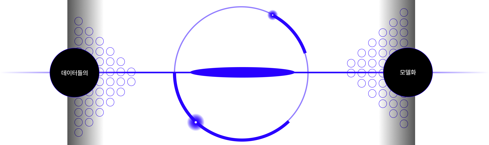

단 1분 간 만들어지는 데이터
어떻게 이 방대한 데이터들을 활용하는걸까?
데이터 마이닝의 정의
대량의 데이터 세트에서 패턴과
가치 있는 정보를 발견하는 것
데이터 마이닝 프로세스는 데이터 수집부터 시각화까지
여러 단계에 걸쳐 대량의 데이터로부터 가치 있는 정보를 추출하는 것

 ----/process/----------1
---------------2
---------------3
---------------4
---------------5
---------------
----/process/----------1
---------------2
---------------3
---------------4
---------------5
---------------